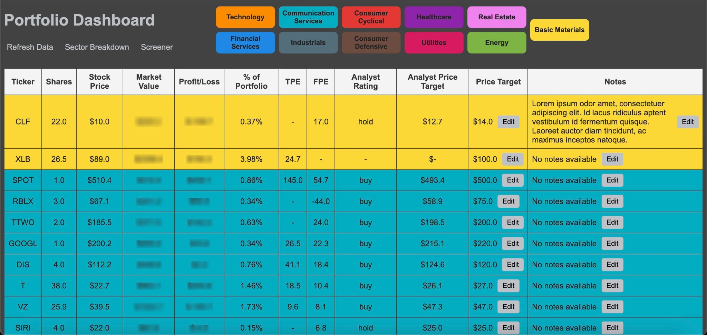
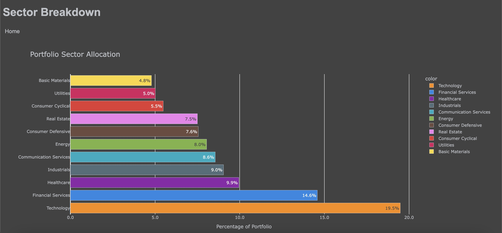
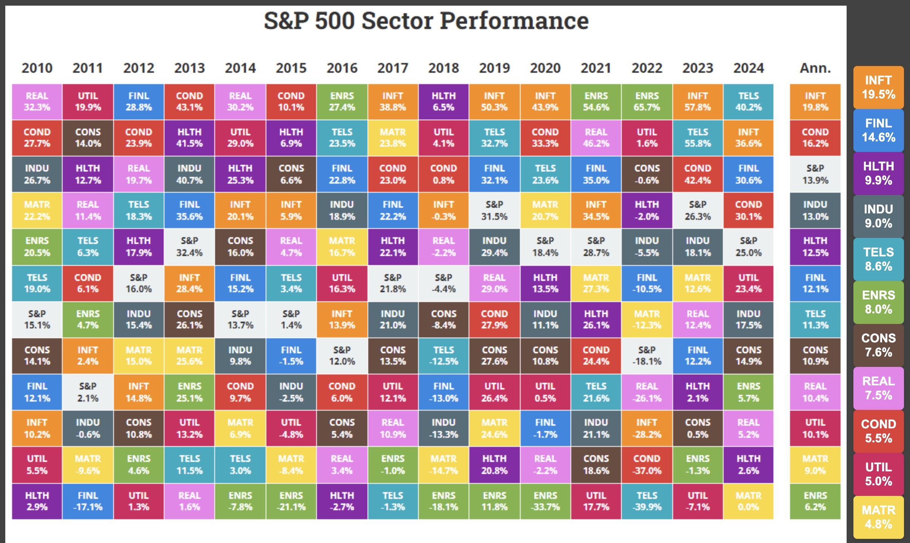

Stock Portfolio Dashboard
Dashboard
The home page of the web app is a comprehensive portfolio dashboard that displays essential details about my investments. It organizes my holdings by providing key metrics such as stock prices, market value, profit/loss, and percent allocation within my portfolio. I can easily add personalized notes for each stock, document research insights, or track investment strategies. Additionally, the dashboard allows me to set and update custom price targets, helping me make informed decisions with all relevant data at my fingertips.
Sector Breakdown
The sector breakdown page offers an in-depth analysis of my portfolio diversification. At its core is a visually engaging bar chart powered by Plotly, which highlights the allocation of my portfolio across various sectors. Each sector is color-coded for clarity, allowing me to quickly assess the strengths and weaknesses of my current diversification strategy. This page provides an intuitive view of my overall investment strategy and highlights areas that may need adjustment.
Sector Performance Integration
A unique feature of the sector breakdown page is its integration of past performance data with my current allocations. Using an embedded chart from Novel Investor, the app displays historical performance for each sector over the past several years. This historical chart is shown alongside my personalized sector allocation, enabling me to easily compare trends and performance against my current investments. This dual perspective helps me better understand the impact of market trends on my portfolio and refine my strategies accordingly.
Tech Stack
The web app is built with a robust tech stack that combines Python, Flask, and SQLite for backend operations. It fetches real-time portfolio data using the Schwab Developer API and integrates external APIs like Yahoo Finance for live stock data and analytics. The frontend leverages HTML, CSS, JavaScript, and Plotly for interactive visualizations and a dynamic user experience. By blending full-stack development with data-driven insights, the app delivers a powerful, intuitive platform for portfolio management.